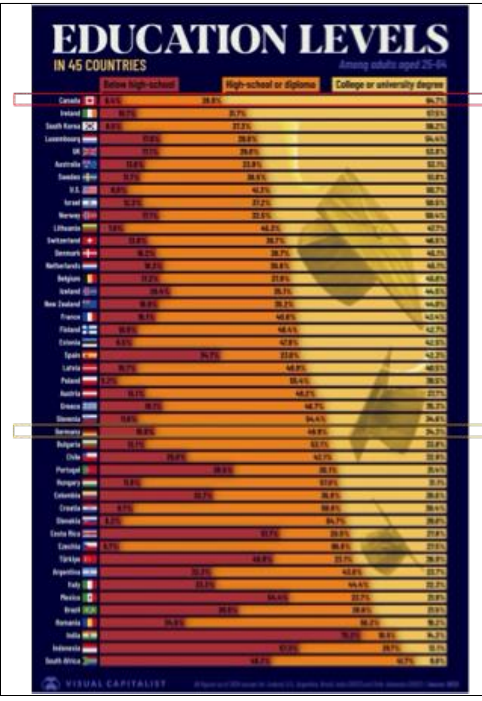
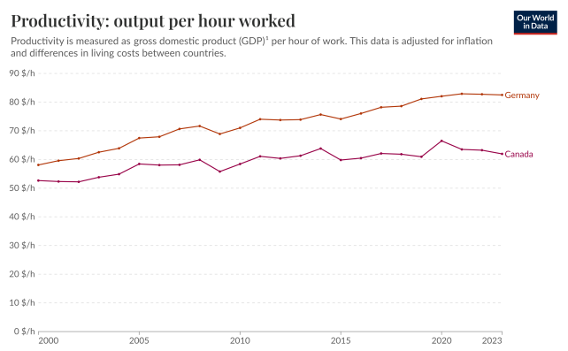
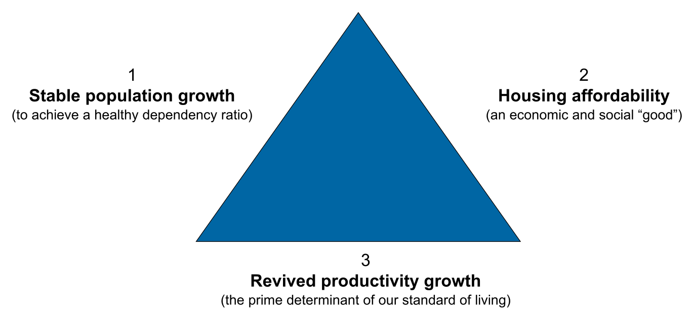
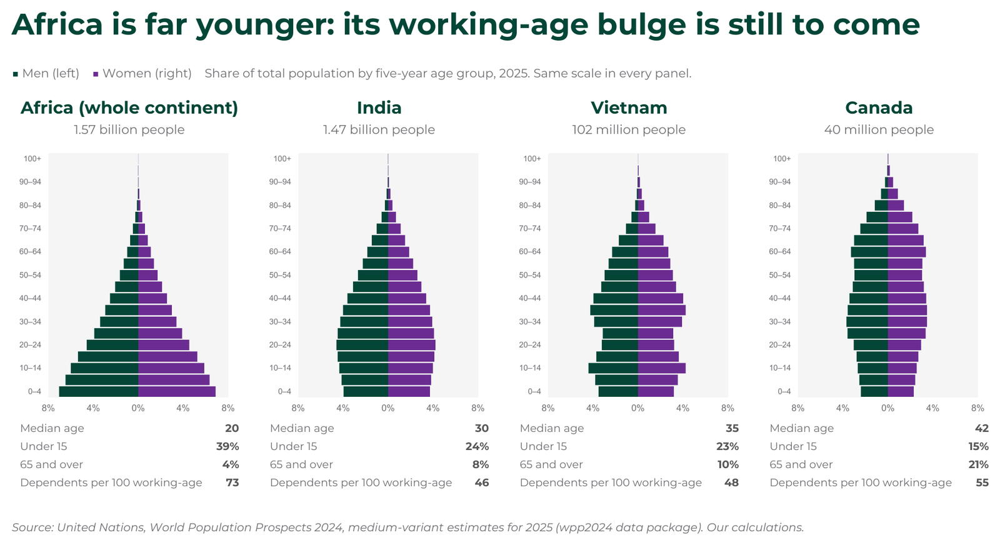

Start here
How this exam works
In one lineOne exhibit, four to six questions, each with points and a word cap. Marks go to a clear verdict, the course concept by name, and the chart feature that proves it.
Prof. Frost set the 2025 paper: one Economist chart on crop yields, 40 points. The 2024 file lists him as author: two trilemma figures plus a Krugman email, 80 marks. Both papers allow about 15.5 words per point. The 2025 makeup paper (posted Oct 22) puts Canada against Germany on education and productivity: 50 marks in 500 words, about 10 per mark.
What the keys reward
| Pattern | Evidence in the keys | Where |
|---|---|---|
| Verdict first | Key opens “The chart contradicts the idea…” | 2025 Q1 |
| Name the concept | “Full marks should mention structural transformation” | 2025 Q4 |
| Cite the chart feature | “The orange line is almost flat” | 2025 Q1 |
| Use every given fact | “Make sure to use both pieces of information” | 2025 Q3 |
| Accept the premise | “Answers should not fight the trilemma” | 2024 Q1b |
| One concrete example | Water buffalo vs tractor, inside a 5-mark item | 2024 Q2c |
| Act, don’t study | Rewards proposals that are more than “study” | 2024 Q1c |
| Reasoned dissent scores | Inequality “down” earns full marks if reasoned | 2025 Q4 |
The real cases, highlighted
In one lineThe actual exam PDFs with the highlights drawn on them. Yellow explains a line, red is a trap, and the numbered circles match the notes. Try a paper cold first.
2025 paperRich country, poor country. Crop-yield chart, 4 questions, 40 pts
2025 makeupCanada vs Germany, education and productivity. 4 questions, 50 marks
2024 paperCanada trilemma figures plus the Krugman email. 80 marks
Answer keys, highlighted: 2025 answer key · 2025 makeup answer key · 2024 answer key
Midterm videos
Big picture: the course’s growth model
In one lineEvery past question is about one diagram: what makes GDP grow, and what sits underneath it.
| Box | Questions |
|---|---|
| Labour force growth | 2024 Q1a · 2024 Q1b · 2024 Q2b · Practice |
| Capital deepening | 2025 Q2 · 2025 Q3 · 2025 Q4 · 2024 Q2c |
| Innovation (TFP) | 2024 Q2a · 2024 Q2c |
| Institutional environment | 2025 Q2 · 2025 Q4 · 2024 Q1c · 2024 Q2c |
| GDP vs GDP per person | 2024 Q2b · Practice |
Building blocks
Nineteen pieces in four families. Each card says where a past paper used it. S1 to S8 mark the session it comes from.
Concepts
8 sections1 Two growth channels: labour input and productivity
In one lineGDP grows because more hours get worked or because each hour produces more. Only the second keeps raising living standards.
Session 5 calls these the “supply side determinants of potential output”. Productivity itself grows three ways: capital deepening, human capital and innovation. On the exam, say which channel a number belongs to before you interpret it.
2 Capital deepening and diminishing returns
In one lineA poor farm’s first tractor transforms it; a rich farm’s next tractor barely registers. That is why poor countries can grow faster.
Each extra unit of capital adds less than the last: Session 4’s “iron law of diminishing returns”. Early in development “a little capital goes a long way”, so investment pays most where capital is scarcest, which is why catch-up is possible.
3 Institutions: the root under the proximate causes
In one lineContract law doesn’t grow corn. It decides whether anyone buys the tractor, fertilizer and storage that do.
Capital, skills and technology are proximate causes. Institutions are the root: they set the return to investing and the risk of losing it. Session 4 calls Vietnam’s 1986 reforms taking “the good institutions pill”, the phrase 2025 Q4 reuses.
4 Convergence is conditional
In one linePoor countries can grow faster by copying what already works, if they can fund and protect the investment.
Session 4’s verdict on catch-up: “Overall, yes, but not as robustly as we should expect…or desire.” Diminishing returns create the opportunity; institutions and finance decide whether it is taken.
5 Structural transformation and the Kuznets curve
In one lineAs farms get productive, fewer people are needed on them, and workers move to cities where each produces more.
Session 4: workers and investment move “away from agriculture to manufacturing and services, which tend to have higher productivity because of greater capital, specialization and scale”. In 1990 agriculture employed nearly 80% of Vietnamese workers.
6 Potential vs actual GDP
In one linePotential GDP is what the economy can make at a steady, sustainable pace. Actual GDP swings above and below it.
Session 1 defines the output gap as actual minus potential output, zero at full employment. Krugman talks about potential because he means the long-run trend that sets living standards across generations, not one year’s swing.
7 Canada’s growth: more people, flat productivity
In one lineCanada’s GDP grew after the pandemic mostly because the population jumped. Output per person fell.
This is 2024 Q2b in numbers. Growth came through labour input while productivity growth trailed the US for two decades. Session 8’s suspects: weak business investment, falling capital per worker, a resource-heavy mix, small markets, little competition.
8 Trilemma logic: pick two, lose one
In one lineThree goals compete for the same people, money and builders. Any two together crowd out the third.
The 2024 key pays 10 marks per corner. The hinge is construction: residential building is a “chronically low (and declining!) productivity sector”, so housing a growing population pulls capital and talent away from productivity growth.
2025 paper
40 points · 4 questions2025 paper: one chart, four questions
In one lineSame quality of land, very different harvests. Every question asks why Mozambique gets so much less from its land than Germany does.

| Measure | Mozambique | Germany | How to say it |
|---|---|---|---|
| GDP per person, 2000 | ≈ $1.2k | ≈ $29k | Germany about 24× richer |
| Potential yield (orange) | ≈ $1,480/ha | ≈ $1,490/ha | essentially equal |
| Actual yield (teal) | ≈ $260/ha | ≈ $1,240/ha | Germany about 5× per hectare |
| Actual ÷ potential | ≈ 18% | ≈ 83% | under a fifth vs over four fifths |
| Land per person | ≈ 6× | 1× | given in the footnote |
| Orange trend line | ≈ $1,600 to $1,900, poorest to richest | flat: land isn’t what differs | |
| Teal trend line | ≈ $250 to $1,350, poorest to richest | rises about fivefold with income | |
Read it highlightedThe 2025 paper·The crop chart, annotated
Q1 Natural resources and prosperity · 8 points
Read it highlightedQuestion: the claim under test·Key: the verdict comes first
| Concept | Where it comes from |
|---|---|
| Resources set potential, not outcomes | S4 GDP Across Time and Place: why places differ |
| Reading trend lines and gaps | Exhibit skill; used in every 2025 question |
| Capital and know-how as proximate causes | S5 growth model; appendix to the 2024 key |
Answer plan
Commit to a verdict in the first words
The question offers two options. Say mostly contradicted first. A hedge with no verdict gives away the easiest marks.
Read the orange line as the resource test
Potential yield measures what land and climate allow. If resources made countries rich, the orange line would slope up. It is flat.
Orange trend, poorest end ≈ $1,600 per hectare Orange trend, richest end ≈ $1,900 per hectare GDP per person, across chart ≈ $0.4k to $60k over 100× Potential yield, across 1,900 ÷ 1,600 ≈ 1.2× essentially flat
Put numbers on the two named countries
The chart draws a vertical line for each country: the gap between what the land allows and what farmers get.
Potential Actual Actual ÷ potential Mozambique ≈ 1,480 ≈ 260 260 ÷ 1,480 ≈ 0.18 under a fifth Germany ≈ 1,490 ≈ 1,240 1,240 ÷ 1,490 ≈ 0.83 over four fifths $ per hectare, approximate, read off a log chart
Use the footnote fact
Mozambique has nearly six times Germany’s land per person. More land, just as fertile, and still far poorer: the resource story cannot explain that.
Close on what does matter
Name the alternative in one line: capital, know-how and institutions turn land into output. Question 2 develops it, so keep this short.
Spend the words
Verdict + orange line ≈ 35 words
Two countries, with numbers ≈ 35 words
Land fact + what matters ≈ 30 words
───────────
Total ≈ 100 wordsMy answer, written to the cap
90 words / 100 maxMostly contradicted. If natural resources made countries rich, potential yields (orange), which measure what land and climate allow, would rise with income. They do not: the orange trend line stays near $1,600 to $1,900 per hectare across all incomes. Only actual yields (teal) rise with income. Mozambique and Germany have almost identical potential, about $1,500, yet Mozambique realizes under a fifth of it and Germany over four fifths, though Mozambique has nearly six times Germany’s land per person. Canada’s farmland helps, but capital, know-how and institutions turn land into income.
The official key, and how mine compares
The chart contradicts the idea that natural resource endowments explain prosperity. The orange line is almost flat, showing that there is no intrinsic difference in potential crop yields between poor and rich countries. The chart shows that Mozambique’s potential crop yields are slightly higher than Germany’s and amongst the highest of all, suggesting it has very fertile land. Yet Mozambique’s actual yields are far lower, while Germany’s are close to potential. This indicates that having natural resources is not sufficient for wealth; what matters more is the ability to translate potential into actual productivity, likely capital, know how, and strong institutions that support investment and entrepreneurial activity.
Agree
Same verdict and the same evidence: the flat orange line, and Mozambique far below potential while Germany sits close to it. Same closing cause: capital, know-how, institutions.
What the key adds
The phrase “translate potential into actual productivity” is worth borrowing. It also names entrepreneurial activity alongside investment.
Where to beat it
Stay under 100 words; the key runs to 108. Mozambique’s potential sits mid-pack, not “amongst the highest”. Use the six-times land fact and put numbers on both gaps.
Q2 Role of institutions · 12 points
Read it highlightedQuestion: one hidden cause behind both axes·Key: four named institutions
| Concept | Where it comes from |
|---|---|
| Institutions as the root cause | S4: North Korea at night; Vietnam’s 1986 pill |
| Capital deepening as the channel | S5 growth model; appendix to the 2024 key |
| One cause behind both axes | Exhibit skill: explain the slope and the flat line |
Answer plan
Respect the corn warning
Contract law doesn’t grow corn, so every institution you name needs a channel: institution, then investment, then yield. Concept 3 draws that chain.
Pick four institutions, one channel each
These are the reforms the paper itself lists in Question 4, so they are safe choices.
Property rights → collateral, merge plots → tractors, irrigation Rule of law → lenders and buyers trust → long-horizon investment Finance → savings become capital → fertilizer, storage Roads and trade → surplus reaches a market → worth producing more All four → capital deepening on farms → actual yield moves toward potential
Explain the x-axis too
The same institutions raise investment in every sector, so they also lift GDP per person. That is why the teal line slopes up while the orange line stays flat.
Anchor to the chart and the footnote
Germany realizes about 83% of its potential; Mozambique under 20% of equally good land. The footnote hands you the story: civil war, instability, corruption, weak rule of law.
Spend the words
Thesis: one hidden common cause ≈ 35 words
Four institutions × ≈ 30 words ≈ 120 words
Both axes + chart numbers ≈ 45 words
───────────
Total ≈ 200 wordsMy answer, written to the cap
199 words / 200 maxInstitutions are the hidden common cause of both axes. They do not make corn grow; they decide whether anyone invests to close the gap between potential and actual yield, the vertical lines the chart draws.
Property rights. A German farmer with secure title can buy neighbouring plots, consolidate into scale-efficient farms and borrow against the land. A Mozambican farmer on insecure, fragmented plots has no collateral and little reason to improve land he could lose.
Contract enforcement and rule of law. Suppliers, buyers and lenders deal with strangers only when contracts hold. Corruption and post-war instability add risk that kills long-horizon investments such as irrigation.
Finance. Working credit markets turn savings into tractors, fertilizer and storage. That is capital deepening, the step that lifts actual yields toward potential.
Infrastructure and open trade. Roads, ports and power let farmers sell surplus and import seed and machinery, so producing beyond subsistence pays.
The same institutions raise investment across the whole economy, so they also raise GDP per person. That is why the teal line slopes up while the orange line stays flat. Germany realizes about 83% of its potential; Mozambique, weak on all four, realizes under 20% of equally good land.
The official key, and how mine compares
Good institutions create the environment for farmers and firms to use land and technology effectively. In Germany, strong rule of law, reliable property rights, well-functioning finance/capital markets, and a relatively open set of trade relations are key success factors that reduce uncertainty, encouraging investment in modern capital equipment such as tractors, irrigation systems, and storage facilities. These institutions also support well-functioning markets and infrastructure, enabling farms to combine plots into larger, scale efficient operations, which lowers costs and raises productivity. Together, these factors help Germany achieve actual yields close to potential yields.
In Mozambique, weak rule of law, corruption, and political instability discourage investment and limit secure land ownership. In all likelihood, Mozambique also has weak credit institutions for funding capital investment, meaning that farmers remain stuck with outdated tools and small, fragmented plots, preventing them from reaching efficiency or adopting advanced technologies. Even though Mozambique’s land has very high potential yields, the absence of supportive institutions means much of this potential is lost.
Thus, the patterns in the chart reflect institutional differences: Germany’s good institutions foster capital accumulation and efficient farm sizes, translating potential into realized productivity, while Mozambique’s weak institutions leave it far below its potential.
Agree
Same institutions (rule of law, property rights, finance, open trade) and the same channel: investment in tractors, irrigation and storage that lifts actual yields toward potential.
What the key adds
Plot consolidation into larger, scale-efficient farms, and the footnote’s corruption and instability. Both deserve a sentence; my answer includes them.
Where to beat it
The key never explains the x-axis. Say why the same institutions raise GDP per person, so teal slopes up and orange stays flat, and cite about 83% vs under 20%.
Q3 Future uncertain: convergence · 12 points
- In Mozambique, agriculture accounts for over 70% of employment but only about 25% of GDP. In Germany, agriculture represents approximately 1% of both employment and GDP.
- Mozambique has a debt-to-GDP ratio of 76.9% and a CCC+ credit rating (very high default risk), compared to Germany’s 62.5% debt-to-GDP and AAA rating.
Read it highlightedQuestion: turn the jobs fact into a number·Key: the number it never computes
| Concept | Where it comes from |
|---|---|
| Convergence is conditional | S4: poorest of 1950 grew below world average |
| Diminishing returns to capital | S4: “a little capital goes a long way” |
| Structural transformation | S4: workers move from farms to industry, services |
| Country risk blocks investment | Given CCC+ fact; institutions and finance |
Answer plan
Turn the jobs fact into productivity
A sector’s share of GDP divided by its share of jobs gives its output per worker relative to the national average.
Relative productivity = share of GDP ÷ share of jobs Mozambique farms 25 ÷ 70 ≈ 0.36 about a third of the average Mozambique non-farm 75 ÷ 30 = 2.5 Gap inside Mozambique 2.5 ÷ 0.36 ≈ 7 leaving the farm ≈ 7× the output Germany farms 1 ÷ 1 = 1.0 farms as productive as the rest
Read the debt fact for what it signals
The debt burdens are close; the ratings are far apart. Lenders are pricing default risk and institutions, which decide whether capital arrives.
Debt-to-GDP gap 76.9 − 62.5 = 14.4 percentage points modest Rating gap CCC+ vs AAA enormous → the doubt is about institutions and default risk, not debt alone
Build the convergence paragraph
Room to catch up (0.36), diminishing returns on near-zero farm capital, Germany already at about 83% of potential, equally good land, and structural transformation. Uses the jobs fact.
Build the skeptical paragraph
Convergence is conditional. CCC+ means costly or no credit for farmers and the state, and debt service crowds out roads and irrigation. Uses the rating fact; tie it to the footnote.
Keep the two-paragraph shape
Label each paragraph exactly as the question does. Each has its own 100-word cap, so one paragraph cannot borrow words from the other.
My answer, written to the cap
99 words / 100 maxReasons to expect convergence. Mozambique has enormous room to catch up. Agriculture holds over 70% of jobs but produces only 25% of GDP, so a farm worker produces about a third of the national average (25 ÷ 70 ≈ 0.36); in Germany the ratio is 1. Mozambican farms have almost no capital, so diminishing returns work in its favour: the first tractors, fertilizer and storage raise yields far more than Germany’s next machine, and Germany already realizes over 80% of its potential. The land is just as good. Moving workers into industry and services adds more through structural transformation.
99 words / 100 maxReasons to be skeptical of convergence. Convergence is conditional, not automatic: the poorest countries of 1950 grew more slowly than the world average. Catching up needs investment, and Mozambique struggles to fund it. A CCC+ rating signals very high default risk, so borrowing is costly or unavailable, while AAA-rated Germany borrows cheaply. The debt ratios differ less (76.9% vs 62.5%) than the ratings do, so lenders see risks beyond the debt itself, chiefly weak institutions. Heavy debt service also crowds out roads, irrigation and extension services. Without institutional reform, the capital never arrives and yields stay far below potential.
The official key, and how mine compares
Reasons to Expect Convergence:
Mozambique has substantial room to improve agricultural productivity because agriculture employs over 70% of workers but produces only about 25% of GDP. This large productivity gap means that even modest gains in capital investment, farm size, and technology adoption could generate big percentage increases in output. Germany, by contrast, already operates near the efficiency frontier: only 1% of its workforce is in agriculture, and its farms are highly mechanized. Diminishing returns to further capital deepening suggest Germany’s crop yields will rise only slowly.
Reasons to Be Skeptical of Convergence:
Mozambique’s high debt-to-GDP ratio (76.9%) and CCC+ credit rating severely limit its ability to finance the investments needed for modern agriculture. High borrowing costs and scarce credit make it difficult for farmers and the government to fund irrigation, machinery, and infrastructure such as roads and storage. Germany’s AAA rating and stronger fiscal capacity, meanwhile, ensure continued access to low-cost capital and innovation. Without major institutional reform or external support, Mozambique’s financial constraints will keep productivity growth below that of high-income countries.
Agree
Same structure, both facts used, the same diminishing-returns logic for convergence and the same credit constraint against it.
What the key adds
Germany “already operates near the efficiency frontier”, and the public side: a CCC+ government cannot fund roads and storage either.
Where to beat it
Turn 70/25 into a number: about 0.36, roughly a seventh of non-farm output per worker. Debt ratios are close while ratings are not, which points to institutions.
Q4 Future perfect: ten years on · 8 points
- Agricultural output (total real value, level)
- Agriculture’s share of total employment
- Poverty: number of people living below the extreme poverty threshold
- Inequality: distribution of income within the country or, more simply, the rich-poor gap
Read it highlightedQuestion: the institutions pill·Key: name the concept
| Concept | Where it comes from |
|---|---|
| Capital deepening after reform | S4: Vietnam’s 1986 pill, roughly 10× richer since |
| Structural transformation, by name | S4; key requires the term for full marks |
| Poverty count vs poverty rate | Question wording: “number of people” |
| Kuznets curve | 2025 key, Q4 marking note |
Answer plan
Use the scale words exactly
Start each line with one of the five options, then about 30 words of reason that name a course concept.
Output: up a lot
Farms sit under a fifth of potential with almost no capital, so the first investments pay the most. Vietnam after 1986 is the course example.
Farm job share: down a lot, and say the term
More productive farms need fewer hands; industry and services pull workers to cities. The key: “Full marks should mention structural transformation.”
Poverty count: check the arithmetic
The question asks for the number of people, and the population keeps growing. The rate must fall a long way before the count falls a lot.
Population growth ≈ 3% a year Africa, S7; assumed for Mozambique Growth factor 1.03^10 ≈ 1.34 34% more people by 2037 Poor today 0.70 × population Count stays flat rate = 0.70 ÷ 1.34 ≈ 0.52 rate must fall to 52% to stand still Count halves rate = 0.35 ÷ 1.34 ≈ 0.26 rate must fall to about 26%
Inequality: pick a side and reason it
Kuznets: early gains go to urban, skilled and capital-owning groups, so up. The key also gives full marks for down if you argue the extractive elite loses ground.
My answer, written to the cap
118 words / 120 maxAgricultural output: up a lot. Secure titles and credit bring capital deepening to farms realizing under a fifth of potential; at such low capital, each investment raises yields sharply, as in Vietnam after 1986.
Agriculture’s share of employment: down a lot. Structural transformation: more productive farms need fewer workers, and better-paid jobs in industry and services pull them into cities.
Poverty (number of people): down a lot, but less than the rate: population grows about a third by 2037, so the rate must fall below 52% to hold the count. Vietnam-style growth cuts it further.
Inequality: up a little. Kuznets curve: urban, skilled and capital-owning groups gain first. It could fall if reform breaks the extractive elite’s hold.
The official key, and how mine compares
Agricultural output (real value-added): Up a lot. Secure property rights, credit access, and infrastructure spur capital investment and technology adoption, sharply raising productivity and total farm output. (27 words)
Agriculture’s share of total employment: Down a lot. Rapid urbanization and job growth in industry and services pull workers out of agriculture, shrinking its employment share dramatically. Full marks should mention “structural transformation”. (27 words)
Poverty: Down a lot. Rapid productivity and job growth in agriculture, manufacturing, and services lift incomes broadly, sharply reducing extreme poverty rates. (22 words)
Inequality: Up for sure, but hard to know little or a lot. Early gains accrue mainly to urban, skilled, and capital-owning groups; rural incomes rise later as diffusion and migration spread benefits. This is known as the Kuznets curve, but exams don’t have to mention it to score full points. (32 words)
One contextual nuance: in some poor countries – and this actually is true for Mozambique – there exists today a high degree of inequality (large Gini coefficient). So, with that context, it is possible that inequality in Mozambique could go DOWN as the new (modernizing) agricultural and industrial classes begin to catch up to the extractive elite. So, in marking this question we should prepare for that alternative and reward it (fully) if they get the reasoning correct.
Agree
Same four calls: output up a lot, farm job share down a lot, poverty down a lot, inequality up. Same reasons, and structural transformation named.
What the key adds
Two marking notes: full marks should name structural transformation, and inequality “down” also scores fully “if they get the reasoning correct”.
Where to beat it
The question asks for the number of poor people; the key reasons about rates. With population growing about 3% a year, say the count falls less than the rate.
2025 makeup paper
50 marks · 4 questions2025 makeup paper: education vs productivity
In one lineCanada has the most educated adults in the OECD; Germany produces over 30% more per hour. Every question asks why more schooling did not buy Canada more productivity.




| Measure | Canada | Germany | How to say it |
|---|---|---|---|
| College or university degree | nearly 2/3 | 34.3% | Canada about double; first of 45 |
| High school or diploma | ≈ a quarter | ≈ half | Germany’s skills sit in the middle bar |
| Output per hour, 2000 | ≈ $53 | ≈ $58 | gap under 10% |
| Output per hour, 2023 | ≈ $62 | ≈ $82 | gap over 30% (82 ÷ 62 ≈ 1.3) |
| Growth, 2000 to 2023 | ≈ +17% | ≈ +40% | Germany grew more than twice as fast |
Posted by Prof. Cornelson on Canvas, Oct 22, 2026, with model answers. The PDF lists Prof. Frost as author. Not yet in the case reader.
Q1 Define the puzzle · 10 marks
| Concept | Where it comes from |
|---|---|
| Human capital (labour quality) drives productivity | S5 growth model; 2024 key appendix |
| Level vs growth of productivity | The right-hand chart: gap at the start and at the end |
| Using both charts and both countries | Stated in the question |
Answer plan
State the expectation from the model
Education is human capital, one of the three productivity drivers next to capital deepening and innovation. More of it should mean more output per hour.
Show the opposite with both charts
Canada: nearly 2/3 with degrees, first of 45. Germany: 34.3%. Yet Germany is ahead per hour and the gap widened.
2000 58 ÷ 53 ≈ 1.1 gap under 10% 2023 82 ÷ 62 ≈ 1.3 gap over 30% → Germany leads in level and in growth
Stop before the causes
The question says not to explain why. Spend the words on a crisp definition; save hypotheses for Q2.
My answer, written to the cap
95 words / 100 maxCanada has more of a key productivity input, yet less productivity. In the growth model, human capital (labour quality) drives output per hour alongside capital deepening and innovation. Canada tops the OECD: nearly two thirds of working-age adults hold a degree, about double Germany’s 34.3%. Yet Germany produces more per hour and is pulling away: about $82 in 2023 against Canada’s $62, a gap that grew from under 10% in 2000 to over 30%. The puzzle: the most educated country trails a far less educated one in both the level and the growth of productivity.
The official key, and how mine compares
The charts reveal a clear puzzle: Canada leads the OECD in educational attainment, with nearly two-thirds of adults holding a tertiary degree, yet it lags Germany in productivity per hour worked. Germany ranks much lower, only about one-third of its population has an advanced degree, but achieves both higher productivity levels and faster productivity growth.
Within the GMM growth framework, education (human capital) is a key driver of productivity. Yet Canada’s experience suggests that high educational attainment alone does not automatically translate into higher productivity. Conversely, Germany’s strong performance implies that factors other than formal education levels may be more important in yielding superior productivity outcomes.
Agree
Same puzzle: Canada first on education, behind Germany on output per hour, in level and in growth. Both name human capital as the model link.
What the key adds
A closing hint that “factors other than formal education” matter for Germany. It sets up Q2 and Q3 without explaining them.
Where to beat it
The key quotes no productivity numbers. Read the chart: about $62 vs $82 an hour, and a gap that grew from under 10% to over 30%.
Q2 Three hypotheses for Canada · 15 marks
| Concept | Where it comes from |
|---|---|
| Capital deepening: skills need tools | S5 growth model; S8: 54¢ of investment per worker per US dollar |
| Innovation, diffusion, creative destruction, competition | S6 renewal; S8 adoption; 2024 2b key on Canada’s causes |
| Labour quality in use vs credentials on paper | S5 labour quality; S8 immigration share of growth |
| Canada facts from class | S8: business productivity 73% of US in 2019, from 83% in 2002 |
Answer plan
Put each hypothesis in a different box of the model
Distinct means different mechanisms. One per productivity driver: capital deepening, innovation and diffusion, and labour quality. Three investment stories would score as one.
Give each one a Canada fact
Capital 54¢ invested per worker per US $1 (2024) Diffusion business productivity 83% → 73% of US (2002 → 2019) Skills population +3.2% in 2023, 98% from migration
Touch both charts in each
Each hypothesis should say why high attainment (left) coexists with slow output per hour (right). One clause each is enough.
Label them
A short bold label per hypothesis makes the 3 × 5 marking easy. About 50 words each.
My answer, written to the cap
126 words / 150 max1. Too little capital per worker. Canadian firms invest about 54 cents per worker for every US dollar, so graduates work with less and older equipment and software. Human capital and physical capital are complements; without capital deepening, Canada’s degrees cannot raise output per hour.
2. Weak competition, slow diffusion. A small, sheltered market gives incumbents little pressure to adopt new technology or management practices, and little creative destruction. Innovation (TFP) stalls whatever the schooling: business productivity fell from 83% to 73% of the US level.
3. Degrees counted, not used. The chart counts credentials, not skills in use. Many graduates work in routine services or resource and construction jobs, and recent immigrants’ degrees often go unrecognized. Measured attainment overstates the labour quality firms actually deploy.
The official key, and how mine compares
Weak capital deepening and investment incentives: Canadian firms invest less in machinery, equipment, and digital infrastructure than international peers, leaving educated workers without the tools to boost productivity. Human capital alone cannot raise output without complementary capital and innovation. Weak incentives for business investment, high costs, uncertainty, and limited competition, have slowed capital deepening and productivity growth.
Industrial structure and resource dependence: Canada’s economy is heavily concentrated in resource extraction and low-productivity services, where extra education yields limited returns. Output depends more on natural endowments than workforce skills, so rising educational attainment has little effect on overall efficiency. With a small base of knowledge-intensive industries, Canada’s educated labour force remains underutilized and productivity growth subdued.
Weak diffusion and adoption of innovation: Canadian firms lag in adopting frontier technologies and management practices, creating weak productivity growth. High educational attainment generates potential human capital, but limited innovation ecosystems and slow diffusion of best practices prevent it from translating into aggregate productivity improvements.
Weak competition and limited scale economies: Many Canadian firms operate in small domestic markets protected by limited competition. Even with a well-educated workforce, firms may face little pressure to innovate, adopt new technologies, or expand internationally. In the GMM framework, weak competitive dynamics reduce productivity growth by slowing creative destruction and diffusion of best practices.
Skill mismatch and overqualification: Canada’s education system produces many graduates whose skills don’t align with the jobs available in the economy. High formal attainment may hide underemployment or weak absorption of advanced skills. When highly educated workers perform routine or service-sector tasks, average productivity gains remain limited.
Fragmented coordination between education and industry: Educational institutions and employers may be poorly aligned in Canada. Curricula are often developed independently of industrial needs, limiting the translation of learning into productive capability. In contrast, countries with stronger institutional linkages between training systems and firms can convert education more directly into output efficiency.
Agree
My three map onto the key’s capital deepening, diffusion plus competition, and skill mismatch hypotheses. Each is a different driver in the model.
What the key adds
Six options, including industrial structure (resources) and weak links between schools and employers. The second pairs well with Germany in Q3.
Where to beat it
The key cites no Canada numbers. One class fact per hypothesis (54¢, 83% to 73%) shows the “knowledge of Canada” the question asks for.
Q3 Germany makes the thing that makes the thing · 10 marks
| Concept | Where it comes from |
|---|---|
| Labour quality is more than degrees | S5 growth model: skill, not credentials |
| Capital deepening in a capital-goods economy | S5; the question’s own hint |
| Innovation and competition through exporting | S6 renewal; learning by exporting (WDR 2024) |
Answer plan
Translate the joke
Germany specializes in capital goods: machine tools, bearings, sensors, industrial equipment that other producers use.
Explain the education chart
Read the middle bar. About half of German adults hold a high-school or vocational diploma: apprenticeship-trained technicians, the skills these firms need.
Explain the productivity chart
Capital-goods makers use dense, high-quality capital and improve processes continuously, and they sell worldwide. That is capital deepening and innovation: about $58 to $82 an hour.
Leave Canada out
The question says “focus your answer completely on Germany”. A comparison sentence spends words on something that cannot score.
My answer, written to the cap
97 words / 100 maxGermany specializes in capital goods: the machine tools, bearings and sensors other producers use. That structure explains both charts. Its 34.3% degree share understates German skills, because about half of adults hold a high-school or vocational diploma; apprenticeships train technicians in exactly what these firms need, so labour quality is high on the shop floor. Capital-goods makers also work with dense, modern capital (capital deepening) and refine processes constantly (innovation), and selling to manufacturers worldwide brings scale and tough competition. So output per hour rose about 40%, from roughly $58 to $82, without a large graduate share.
The official key, and how mine compares
Germany’s economy is described as one that “makes the thing that makes the thing,” suggesting a deep network of firms producing the machines, tools, and components used by other producers. The educational chart shows that, while relatively few Germans hold university degrees, a large share have completed high-school or diploma-level education. This pattern implies a workforce with strong technical and applied skills, well matched to a manufacturing- and engineering-based economy.
The productivity chart shows that this structure yields high output per hour worked: education in Germany appears tightly connected to practical production needs, allowing technical training to translate directly into efficiency and innovation on the shop floor. Together, these features help explain Germany’s strong productivity despite lower formal tertiary attainment.
Agree
Same core: read the diploma bar, skills matched to production, so training turns into output per hour.
What the key adds
“Tightly connected to practical production needs”: the fit between schooling and firms, the mirror of Canada’s mismatch in Q2.
Where to beat it
The key leans only on labour quality. Add capital deepening and competition from exporting, and quote the productivity numbers.
Q4 Carney: cut basic research? · 15 marks
| Concept | Where it comes from |
|---|---|
| Frontier innovation vs diffusion (infusion) | S6 and WDR 2024: the 3 i’s; S8 op-ed on adopting AI |
| Absorptive capacity | S8: you adopt well only with people who understand the frontier |
| Innovation (TFP) as the lasting growth source | S5 growth model |
| Investment vs operating spending; debt-to-GDP | The question’s budget framing |
Answer plan
Open with the exact words
“Yes, good idea.” or “No, bad idea.” Nothing before it. The key gives full model answers for both, so the side is not graded; the reasoning is.
Concede Carney’s strongest point
He is right that Canada’s gap is adoption, not ideas (Q2). Saying so shows you read the charts and the S8 diagnosis.
Give the mechanism, with a named concept
No side: absorptive capacity, brain drain, research as capital spending. Yes side: knowledge is a global public good; move the marginal dollar to infusion.
End with what to do instead
An actionable alternative, the habit the 2024 1c rubric rewarded: where the money goes, or where the savings come from.
How “No, bad idea” scores
Basic research builds absorptive capacity: the researchers and graduates who can understand and adapt foreign discoveries. Knowledge crosses borders through people. Research is long-lived capital, the kind of spending his new budget wants to protect, and feeds innovation (TFP), the only lasting growth source. Cuts risk brain drain (Hinton, Bengio, Sutton; Mila, Vector, Amii). Fix the lab-to-market link; cut operating spending instead.
How “Yes, good idea” scores
Canada’s gap is diffusion and capital deepening, not ideas (83% to 73% of US; 54¢ per US dollar). Basic science is a global public good, so foreign discoveries come almost free. With deficits and debt-to-GDP rising, the marginal dollar earns more in infusion (WDR 2i). Redirect to adoption and applied work, and protect a core of research and graduate training so the cut stays a rebalance.
My answer, written to the cap · No
136 words / 150 maxNo, bad idea. You are right that Canada’s gap is adoption, not discovery: business productivity fell from 83% to 73% of the US level while our universities produced AI pioneers like Hinton and Bengio. But cutting basic research weakens adoption too. Absorbing foreign ideas takes absorptive capacity: researchers and graduates who understand the frontier and can adapt it for firms. Knowledge spreads mainly through people, and cuts would push them abroad. Basic research is also capital spending under your own new framework: a long-lived investment in innovation, the only lasting source of productivity growth and of the revenue that services debt. Instead, keep discovery funding steady and fix the link to industry: tie grants to firm partners, fund technology adoption in small firms, and strengthen competition so firms want new ideas. Find savings in operating spending.
The other side, written to the cap · Yes
130 words / 150 maxYes, good idea, if the money moves to adoption. Canada’s problem is not too few ideas: business productivity fell from 83% to 73% of the US level, and firms invest about 54 cents per worker for each US dollar. The gap is diffusion and capital deepening. Basic science is a global public good; discoveries made abroad reach Canadian firms almost free. With deficits and debt-to-GDP rising, the marginal dollar earns more in infusion: adoption grants for small firms, applied college and industry partnerships, competition reform that forces incumbents to upgrade, and the capital projects in this budget. Protect a core of frontier research and graduate training, which build the absorptive capacity adoption needs, so this is a rebalance rather than a retreat, and review it once the fiscal position improves.
The official key, and how mine compares
Yes, good idea.
Given mounting deficits and a rising debt-to-GDP ratio, the government must focus scarce resources where they deliver the highest short-term productivity payoff. Basic research is vital in principle, but in practice Canada’s challenge lies less in discovery than in diffusion and execution, turning known ideas into output. Redirecting funds from long-horizon science toward applied partnerships, commercialization support, and workforce skills would yield faster returns and strengthen fiscal credibility. Since scientific knowledge spills across borders, Canada can benefit from discoveries made elsewhere without bearing the full cost. A pause or rebalancing of basic-research funding could free resources for infrastructure, clean energy, and industrial modernization, the “generational investments” most likely to raise growth and tax revenues. To avoid long-term damage, however, such cuts should be clearly temporary and paired with metrics to ensure that future surpluses can rebuild the research base once fiscal conditions improve.
No, bad idea.
Fiscal pressures are real, but cutting university research would weaken Canada’s long-run growth capacity, the very thing needed to stabilize debt ratios over time. Basic science is the seed corn of innovation: it builds the absorptive capacity that allows firms to adapt, refine, and commercialize foreign discoveries. Without it, Canada risks dependence on imported technologies, brain drain, and a shrinking ecosystem for advanced industries. Moreover, research spending is a capital investment, not just a cost, it raises future productivity and revenues, improving fiscal sustainability. The issue isn’t that research “isn’t working,” but that Canada underinvests in connecting labs to markets. A smarter path is to maintain core funding for discovery while tightening incentives for collaboration, proof-of-concept work, and applied diffusion. Fiscal consolidation should come from routine operating expenditures, not from cutting the knowledge base that underpins long-term competitiveness and the very capacity to service future debt.
Agree
Both of my versions use the key’s logic: No rests on absorptive capacity, brain drain and research as investment; Yes rests on diffusion, spillovers and a safeguard.
What the key adds
Even the Yes answer hedges: cuts “clearly temporary and paired with metrics”. A Yes with no safeguard reads as careless.
Where to beat it
Both keys are about 150 words of argument with no Canada numbers. Concede Carney’s point with 83% to 73%, then turn it.
What the third paper tells us about the exam pattern
In one lineThree papers, one ladder: an exhibit, then describe what it shows, then explain it with the growth model, then advise on a policy from a stated position.
| Paper | Exhibit | Describe or define it | Explain with the growth model | Advice, with a position |
|---|---|---|---|---|
| 2025 | Crop yields, Mozambique vs Germany | Q1 supported or contradicted? | Q2 institutions · Q3 convergence | Q4 forecast after reform |
| 2024 | Trilemma figures; Krugman email | 1a explain it · 2a potential GDP | 2b is Canada the same? · 2c stay poor? | 1b pick two · 1c one policy |
| 2025 makeup | Education and productivity, Canada vs Germany | Q1 define the puzzle | Q2 three hypotheses · Q3 Germany | Q4 Yes or No to Carney |
Expect two countries
Germany is the high-productivity benchmark in two of three papers; Canada’s productivity problem is in two of three. Know 73% vs 83%, 54¢ and 3.2% cold.
The first question stops short
Describe or define, then stop. The makeup Q1 says outright: don’t explain the cause. Save the mechanism for the next question.
The last question wants a side
Open with the verdict in the question’s words. All three keys reward a reasoned dissent, so pick the side with the most course concepts.
2024 paper
80 marks · 6 parts2024 paper: Canada’s trilemma
In one lineCanada wants three good things at once, and the figures claim it can only have two. Part 1 asks you to explain, choose, then escape.



Read it highlightedThe 2024 paper·Figure 1a, annotated·Figure 1b, annotated
1a Explain the trilemma · 30 marks
Read it highlightedQuestion: any two, never all three·Key: the hinge of every corner
| Concept | Where it comes from |
|---|---|
| Trilemma logic: shared, scarce resources | The exhibit; worked in Concept 8 |
| Labour input vs productivity | S5 growth model |
| Dependency ratio and aging | S5 labour input channel |
| Low productivity in home building | The key’s hinge for corner 1 + 2 |
Answer plan
Set up for a non-economist
Name the three goals in plain words, each with the reason Figure 1a gives: a healthy dependency ratio, a social good, the standard of living.
Find the one shared constraint
People, savings and builders are limited. Housing needs builders and capital, and home building is a low-productivity sector. Every corner breaks there.
Walk 1 + 2, losing 3
The hint’s corner. Immigration drives demand, so affordability needs a building boom, which pulls capital and talent away from advanced, traded sectors.
Walk 1 + 3, losing 2
Skilled immigrants plus advanced-sector investment. Demand for homes rises, few newcomers build, little capital goes to housing, so prices climb.
Walk 2 + 3, losing 1
Cut immigration to cool demand and free resources. The workforce ages, the dependency ratio worsens, and generations pull apart.
Spend the words where the marks are
Marks 10 per corner × 3 = 30
Words setup ≈ 50 · each corner ≈ 70 · close ≈ 30
50 + 3 × 70 + 30 = 290 ≤ 300My answer, written to the cap
286 words / 300 maxCanada wants three things: steady population growth, so enough workers support a growing number of retirees; affordable housing; and faster productivity growth, the main driver of rising incomes. The claim is that reaching any two undermines the third, because all three compete for the same people, money and building capacity.
1 + 2, losing 3. Steady population growth means aggressive immigration. More people need more homes, so keeping housing affordable means building on a huge scale. But home building is one of our least productive industries, and its productivity has been falling. Pouring workers, savings and bank lending into houses leaves less for factories, software and research, the advanced traded sectors that raise output per worker. We get people and homes, but productivity stalls.
1 + 3, losing 2. Keep immigration high and chase productivity, and we select newcomers for advanced skills, such as engineers and researchers, and steer investment into advanced sectors. Demand for homes keeps rising, but few newcomers are framers or electricians and little capital goes into building, so supply lags and prices climb. The productivity gains also flow mostly to high earners, who bid prices up further.
2 + 3, losing 1. To make homes affordable without a building boom, we cool demand by cutting immigration, which also frees capital and talent for advanced sectors. But Canada is aging: about one person in five is already over 65. With fewer young newcomers, fewer workers pay the taxes that fund pensions and health care, the dependency ratio worsens, and resentment grows between generations.
Each corner fails for the same reason. Population growth needs homes, homes need builders and capital, and every builder or dollar spent on housing is one not spent raising productivity.
The official key, and how mine compares
Stable Population Growth + Housing Affordability (1 + 2, without 3): Canada can use aggressive immigration to maintain stable population growth, which is essential to support an aging population. However, high immigration rates increase demand for housing, driving up prices and making housing less affordable. Trying to achieve housing affordability alongside population growth would likely require substantial housing investment, and the key point here is that residential investment (housing construction) is well known to be a chronically low (and declining!) productivity sector. Solving the housing problem likely means diverting resources (capital and talent) from productivity-enhancing investments in more advanced sectors limiting productivity growth. (10 marks)
Stable Population Growth + Productivity Growth (1 + 3, without 2): Prioritizing population growth and productivity would mean focusing on immigration alongside investments in advanced industries to improve Canada’s economic output per worker. In addition, combining immigration with a focus on productivity likely means prioritizing immigrants with advanced education and skills, not the kinds of new Canadians who would typically have backgrounds in trades and other construction-essential skills. Aggressive immigration and fewer people with construction skills would likely drive-up housing demand without a corresponding increase in housing supply, worsening affordability. Productivity growth often benefits high-income earners more directly, leaving housing even less accessible for average Canadians. (10 marks)
Housing Affordability + Productivity Growth (2 + 3, without 1): Canada could focus on affordable housing and productivity growth by limiting immigration, which would reduce housing demand and keep prices more manageable. With fewer resources needing to be channeled into the chronically low productivity construction sector, Canada could also invest in advanced sectors to raise productivity. However, with limited population growth, Canada’s workforce would age faster, creating a high dependency ratio (fewer working people paying taxes that are needed to support a growing number of older people) and putting pressure on social services, and potentially creating deep inter-generational divisions within our economy that could undermine political and economic stability. (10 marks)
Agree
Same three corners in the same order, and the same hinge: housing pulls capital and talent into a low-productivity sector.
What the key adds
Construction is “chronically low (and declining!)” in productivity, and losing population growth risks inter-generational division.
Where to beat it
The key skips the plain-language setup the question asks for. Open by defining the three goals for a non-economist; close on the one shared constraint.
1b Pick two outcomes · 10 marks
Read it highlightedQuestion: pick two and own the cost·Key: do not fight the trade-off
| Concept | Where it comes from |
|---|---|
| Take the trade-off as binding | Key: “Answers should not fight the trilemma” |
| Reasons for the outcome you drop | Key: quality of the argument is what counts |
| Growth model channels | S5: labour input and productivity |
Answer plan
Accept the premise
Do not argue your way out of the trilemma here; that is Part 1c. The key says so in its first grading line.
State the pick in the first sentence
Name the pair by number and the outcome you give up.
Defend each kept outcome with the growth model
Population growth is the labour input channel; productivity is the only lasting source of higher income per person. One number each helps.
Defend what you drop
Explain why its harm is smallest or can be cushioned, for example with targeted help paid for by a larger tax base.
Admit the cost
Name who pays. It shows you took the trade-off seriously, which is what the key rewards.
Spend the words
Pick, in one sentence ≈ 20 words
Why keep each of the two ≈ 70 words
Why drop the third ≈ 50 words
The cost, admitted ≈ 50 words
───────────
Total ≈ 190 wordsMy answer, written to the cap
192 words / 200 maxI would choose 1 + 3, stable population growth and revived productivity growth, and accept weaker housing affordability.
These are the two channels of our growth model: GDP grows through labour input and productivity. Give up population growth and, as Canada ages, the workforce shrinks relative to retirees; with 21% of Canadians already over 65, fewer workers would carry pensions and health care. Give up productivity and we lose the only lasting source of higher income per person, when Canada already trails the US by about $21 of output per hour worked.
Housing affordability matters, but it is about how the pie is shared rather than how big it is. Its harm can be cushioned with targeted help for low-income renters and first-time buyers, paid for from the larger tax base the other two choices create. A shrinking workforce or stalled productivity cannot be cushioned that way.
The cost is real. Young families will spend more on shelter, the wealth gap between owners and renters will widen, and some talent may leave for cheaper places. I accept that trade-off because a bigger, more productive economy leaves Canada better able to pay it.
The official key, and how mine compares
Students are basically free to choose their preferred outcome and so grading should pay attention to the following:
- Answers should not fight the trilemma. The point here is to take the tradeoffs as real and binding – and then make a decision about which one you prefer.
- The quality of the argument is the key here. Answers should clearly indicate they understand the tradeoff and that they have reasons for deprioritizing the one “desirable” that they have left out. The next 3 pages outline such arguments.
The key’s three example answers, one per choice
Verbatim, except long dashes shown as commas.
Option 1 (1+2, without 3), prioritizing stable population growth and housing affordability, supports social stability and quality of life, making it a strong choice for Canada.
By focusing on stable population growth through controlled immigration, Canada can achieve a balanced age structure, essential for a sustainable dependency ratio. This approach ensures that enough working-age people support the growing elderly population without overwhelming the social infrastructure. Meanwhile, prioritizing housing affordability addresses one of the most pressing issues facing Canadians. Affordable housing enhances economic security for families and promotes equitable access to homeownership, which has far-reaching benefits for mental health, community stability, and intergenerational wealth.
While forgoing aggressive productivity growth may mean slower wage gains and less economic dynamism, a stable population and affordable housing provide a secure foundation for Canadians’ well-being. This strategy fosters a more inclusive society, where more citizens can meet basic needs without extreme economic pressures, building a Canada that prioritizes equitable growth and quality of life over high productivity.
Choosing Option 2 (1+3, without 2), prioritizing stable population growth and productivity, offers Canada the best path for long-term economic resilience and prosperity. By encouraging stable population growth through immigration and investing in productivity-enhancing sectors, Canada can build a more robust and dynamic economy that competes globally.
A growing population provides a young, diverse workforce, essential for supporting an aging demographic and sustaining social programs. Meanwhile, focusing on productivity growth through advanced industries boosts the standard of living by increasing output per worker, which ultimately drives wages and economic prosperity. As a likely bonus, new immigrants have the potential to spur innovation in Canada by allowing people who are not risk averse (the decision to leave one’s home country is something of a signal of that) and who will bring new ideas and a long runway (immigrants are typically younger than average) to make their home in Canada
Although housing affordability may suffer, Canada can address this challenge through targeted policies, such as increasing housing supply over time or offering subsidies for lower-income households. Accepting higher housing costs in exchange for economic dynamism may be necessary to ensure Canada remains competitive and can adapt to future economic shifts. In short, by emphasizing population and productivity growth, Canada strengthens its economic foundation, creating opportunities that can later support more accessible housing.
Option 3 (2+3, without 1), prioritizing housing affordability and productivity growth, creates a balanced approach to economic and social well-being.
By emphasizing housing affordability, Canada can address one of its most pressing social challenges, making homeownership and stable housing more accessible to Canadians across income levels. This approach reduces economic inequality and strengthens social stability, as affordable housing is foundational to health, security, and community cohesion. Addressing housing costs also makes Canada a more attractive place to live, retaining talent and reducing emigration.
Coupled with productivity growth through investments in advanced sectors, Canada can boost economic output and increase wages. This productivity focus supports a higher standard of living, enabling Canada to remain competitive on the global stage and create more high-quality jobs. Although limiting population growth may lead to a higher dependency ratio, this approach allows Canada to strengthen its economy without overburdening housing demand. In the long run, stable housing costs and enhanced productivity can attract skilled talent and improve the quality of life, achieving sustainable growth while addressing core economic challenges.
Agree
Pick a pair, accept the cost, defend the dropped outcome. The key’s Option 2 example makes my pick (1 + 3) and the same cushioning argument: targeted subsidies.
What the key adds
Option 2 adds immigrants as a source of innovation: risk-takers with long careers ahead. A good extra reason for keeping population growth.
Where to beat it
The key’s examples lean on adjectives (“robust and dynamic”). Name the growth-model channels and use one number, such as 21% of Canadians over 65.
1c One policy to escape · 10 marks
Read it highlightedQuestion: now beat the trade-off·Key: resolve it and be feasible
| Concept | Where it comes from |
|---|---|
| Resolves the trilemma, and is feasible | Key criterion 1: “Both matter” |
| Fits the growth model | Key: capital, skills, innovation, backed by institutions |
| Actionable, not “study” | Key: invest, establish, create |
Answer plan
Find the hidden assumption
The trade-offs assume new homes must come from a slow, low-productivity sector. A policy that raises construction productivity attacks all three corners at once.
Use the professor’s lever
The key names it: productivity in residential construction plus zoning reform and anti-NIMBY rules. Choosing it is safe; the marks come from making it concrete.
Make it something the PM can do
Use federal levers: conditions on housing transfers, one national code, loans for factories, an immigration stream. Verbs like tie, fund, open.
Show each corner is met
One line each: housing supply keeps pace, construction productivity lifts the national average, immigration can stay steady.
Name the growth-model link
Capital deepening and innovation in building, unlocked by institutions (zoning and codes). That sentence hits the second criterion directly.
| Criterion | Where my answer hits it |
|---|---|
| Resolves the trilemma | removes the low-productivity housing assumption |
| Fits the growth model | capital, innovation, institutions named |
| Clear, thorough | who does what; all three corners covered |
| Actionable | tie transfers, fund plants, open a stream |
| Creative | factory-built homes on pre-zoned land |
My answer, written to the cap
174 words / 200 maxProposal: a National Factory-Built Housing Deal. Ottawa ties its housing and infrastructure transfers to two conditions: cities allow four-to-six-storey buildings as of right near transit and jobs, and provinces adopt one national building code with a catalogue of pre-approved, factory-built designs. Ottawa adds low-cost loans for modular housing plants and an immigration stream for construction technicians.
How it breaks the trilemma: the trade-offs rest on one hidden assumption, that homes can only come from a slow, low-productivity sector. Factory production lets each worker deliver more homes per year, and pre-approved designs on pre-zoned land cut approval times sharply.
Housing: supply can keep pace with demand, so prices stabilize.
Productivity: construction is a large sector, so raising its output per hour lifts the national average directly and frees workers and capital for advanced sectors.
Population: Canada can keep steady immigration because the homes exist.
It fits our growth model: capital deepening and innovation in building, unlocked by better institutions (zoning and codes). It is actionable: legislate the conditions, fund the plants, open the immigration stream.
The official key, and how mine compares
Again, we should be fairly non-judgmental (i.e., inclusive) about what policies are proposed and focus more on the quality of the ideas and argument contained within. “Quality” can be defined as:
- Resolves trilemma. Proposals should offer a clear story about how their ideas actually solve the trilemma. The pathway provided should have good potential to actually work *and* be feasible. Both matter.
- Consistent with our growth model. The policy proposal is consistent with – and underpinned by – the two main elements of our growth model, labour force growth and productivity growth. Likely the focus will be on productivity growth here, meaning there should be references to factors such as capital investment, skilling and innovation, all supported by “institutions” (policies, rules and regulations, etc) that facilitate these proximate drivers.
- Clear, thorough. Reward clarity and thoroughness within the bounds of the word limit. Ideally, the proposal creates a clear vision of how the ideas presented would be implemented, i.e., what the solution actually looks like. And, ideally, there is enough detail that we can visualize the plan.
- Actionable. Reward proposals that are more than ”study” or “research”. There should be some clear suggestions for what the PM should do: invest, establish, create, etc.
- Creative. We should reward creative ideas that solve the problem and are feasible and actionable, including legal(!)
To me, the most plausible way out of the trilemma is to focus attention on boosting productivity in the residential construction sector, both by influencing the supply side (how we build, and the rules that govern building such as zoning, development fees, etc. Emphasis here could usefully be on anti-NIMBY policies that restrict the volume of building that is allowed to take place and the type of building, e.g., “only single family residences”). In addition, some answers might focus on the demand side (what kinds of housing units we prioritize building) and trying to get home buyers to move away from traditional notions of what a “house” needs to be (quarter acre, low density, etc).
Below are two examples of policy proposals that would meet the above criteria at a very high level. These would clearly be “A” answers and don’t be disappointed if you don’t see any that quite hit this standard. But this is what excellent looks like. There are probably many more examples like this and you should be receptive to these. When grading, you should be mostly concerned with whether and to what extent the proposal provided meets the evaluation criteria above.
The key’s two “A” example proposals
Verbatim, except long dashes shown as brackets, and two dashes in the criteria above shown as short dashes.
To address Canada’s trilemma (balancing stable population growth, housing affordability, and productivity growth), I propose a National Construction Productivity Initiative. The NCPI would drive innovation and efficiency in Canada’s construction sector, allowing the industry to build more affordable housing faster and at lower costs, all while boosting productivity across the economy. The initiative would focus on three main areas:
Incentivize Adoption of Advanced Construction Technologies:
- Provide tax incentives, grants, and low-interest loans to construction firms that adopt technologies like modular construction, 3D printing, and prefabricated materials. These methods can reduce on-site labor needs and construction timelines, increasing productivity and lowering costs.
- Establish partnerships with technology firms and universities to bring emerging construction technologies to market faster and train workers in new skills.
Streamline Regulatory Processes and Standardize Building Codes:
- Collaborate with provinces and municipalities to harmonize and streamline building codes and zoning laws across Canada, especially in high-growth areas. By reducing red tape, construction projects can move more quickly from approval to completion, addressing housing shortages faster.
- Introduce digital permitting systems to reduce approval times and increase transparency in the construction process.
Develop a Skilled Workforce for High-Productivity Construction:
- Fund specialized training programs for construction workers in new technologies, materials, and project management techniques, ensuring the industry has the skills needed to improve productivity.
- Create targeted immigration pathways for skilled workers in construction technology and management, addressing labor shortages and supporting stable population growth.
How It Solves the Trilemma:
- Housing Affordability: By improving construction efficiency, the NCPI can lower the costs of building homes, making housing more affordable and available.
- Productivity Growth: Increased productivity in construction supports overall economic growth, making Canada more competitive and raising the standard of living.
- Stable Population Growth: As construction capacity increases, housing supply can better meet the needs of a growing population, making it feasible to maintain immigration levels without worsening the housing crisis.
To tackle Canada’s economic trilemma (achieving stable population growth, housing affordability, and productivity growth simultaneously), I would recommend a smart housing initiative, which I’ll call the National Housing and Innovation Corridor Initiative.
Proposal: National Housing and Innovation Corridors
Establish designated Housing and Innovation Corridors across Canada. These corridors would combine high-density, affordable housing development with targeted investments in advanced industries (like green technology, digital services, and advanced manufacturing). By strategically locating these corridors in underutilized urban and suburban areas, this policy can address housing supply constraints, stimulate productivity growth, and manage population distribution.
Key Components:
- Federal-Provincial Partnership for Zoning and Development: The federal government, in partnership with provincial and municipal governments, would streamline zoning and provide incentives for high-density, affordable housing construction in these corridors. The focus would be on creating diverse housing options, with price controls or subsidies to maintain affordability. This expansion in supply would help stabilize housing prices without sacrificing urban density.
- Investment in Advanced Sectors: Alongside housing, these corridors would receive federal investment in productivity-enhancing sectors like technology, clean energy, and skilled trades training. By clustering housing and job opportunities, the initiative would create self-sustaining, high-value economic hubs that boost productivity.
- Targeted Immigration for Skilled Workers: Within these corridors, prioritize immigration for skilled workers in high-demand fields, aligning with productivity growth goals. This managed approach would support stable population growth without overwhelming housing markets in other regions.
How It Solves the Trilemma:
- Stable Population Growth: By targeting immigration within designated corridors, Canada can manage population growth where housing and job opportunities are concentrated, maintaining a healthy dependency ratio.
- Housing Affordability: High-density, affordable housing in the corridors directly addresses Canada’s housing shortage, easing pressure on existing urban centers and reducing housing costs.
- Productivity Growth: Concentrating advanced industries in these hubs enhances productivity by creating innovation ecosystems, increasing wages, and supporting economic competitiveness.
Agree
Same target as the setter’s stated preference: construction productivity plus zoning reform, with factory-built homes and a skilled immigration stream, like the key’s first example.
What the key adds
Digital permitting and university partnerships, plus demand-side ideas: moving buyers away from the quarter-acre, low-density house.
Where to beat it
Lead with the hidden assumption the policy breaks; the key’s examples list components first. Use levers the PM controls: transfer conditions, loans, immigration.
2024 paper: the Krugman email
In one lineA relative heard a Nobel economist say nobody knows how to add a point of growth, and wants you to explain what that means.
Subject: I know you are taking Economics right now
Hi Sweetness, (Prof note: yeah, that’s your family nickname, sorry.)
I heard this amazing interview the other day with an economist -- Paul Krugman. HE WON THE NOBEL PRIZE! He was talking about the US economy, but I didn’t really understand everything he said. I know you are taking economics right now and I thought “hey, I bet Sweetness knows!” Here’s the transcript from the part I found confusing:
“If you look at a chart of U.S. potential GDP growth over the past 50 years – we had some pretty big political swings in there, big changes in tax policy, trade deals, etc. If you didn't know that there had been big changes in politics and policy, you would never guess. It's pretty much just a flat line. The reason is that economic growth is largely driven by innovation – inventing new things and new ways of doing things. And who really knows what levers to pull to make that happen?
If someone says, ‘I have a policy that could raise potential GDP growth by a quarter of a percentage point,’ I'd say, ‘okay, I could possibly believe that, show me the details.’ If somebody says they could raise it by one percentage point, I think that's crazy. Nobody knows how to do that. We really just don't know very much about why countries have different rates of economic growth.
It feels like we've had a lot of technological change over the last two decades, and yet, if we believe our numbers, total factor productivity growth has been really pretty lousy for that whole period.”
I wrote down the main questions I had while listening to the interview:
- First off, what does Krugman mean by “potential GDP growth”? Why not just say “GDP growth?” (100 words max). 5 marks
- Is Canada in the same situation? I thought our economy was growing – I read that our GDP is quite a bit bigger now than it was before the pandemic. (150 words max). 10 marks
- Assuming Krugman is right to be so pessimistic about growth (NOBEL PRIZE!), I was thinking “Wow, this is really bad for the poor countries of the world – you know, in Africa, parts of Asia and LatAm.” Is Krugman really saying we don’t have any non-crazy ideas for boosting growth by one percentage point for these countries?!!! Are they destined to stay poor forever? ☹ (300 words max) 15 marks
Read it highlightedThe email: a flat line through big policy swings
2a What is potential GDP? · 5 marks
Read it highlightedEmail: a flat line through big policy swings·Key: where the five marks go
| Concept | Where it comes from |
|---|---|
| Potential vs actual GDP | S1 State of the World Economy; Primer 1 |
| Output gap, both directions | S1: actual minus potential |
| Long run vs business cycle | Key: living standards across generations |
Answer plan
Define potential in the key’s words
Use “capacity” and “sustainable”: what the economy can produce using its workers and capital at a normal pace.
Show actual below potential
Recession: unemployed workers, idle machines.
Show actual above potential
Boom: overtime, machines never stopped for maintenance, a pace that cannot last. The key wants both directions.
Answer the why
Krugman cares about the trend in capacity, which sets living standards across generations, not one year’s swing. See Concept 6.
Spend the words
Marks definition 2 · both gaps 2 · why 1 = 5 Words ≈ 25 · ≈ 45 · ≈ 25 ≈ 95 of 100
My answer, written to the cap
91 words / 100 maxPotential GDP is what the economy can produce when it uses its workers and capital at a normal, sustainable pace: its productive capacity. Actual GDP swings around it. In a recession, actual GDP falls below potential because workers are unemployed and machines sit idle. In a boom it can run above potential, with overtime and machines never stopped for maintenance, but that pace cannot last. Krugman says potential because he cares about the long-run trend in capacity, which sets living standards across generations, not the year-to-year swings of the business cycle.
The official key, and how mine compares
2 points for defining potential GDP. The answer should include some concept of “capacity” and/or “long-run sustainability”. (e.g. “Potential GDP is what we could produce over a long period of time if we were using our resources effectively and sustainably. It represents the underlying productive capacity of the economy, which may or may not be realized at any moment in time.”).
2 points for explaining how actual GDP may differ from potential. This should include both an explanation of what it looks like when actual GDP is less than potential (e.g. “Our actual GDP is below potential GDP if we are in a period of high unemployment, when we aren’t using all of our workers”) as well as an explanation of what it looks like when GDP is above potential (e.g. “Our actual GDP is above potential when we are in a boom. Workers may be working a lot of overtime, and we may be running our machines all the time without stopping to service them. We can be above capacity for a while, but we can’t keep up this pace forever.”)
1 point for addressing the “why” question, i.e., why did Krugman focus on potential. Krugman is focused on the fundamental trend in GDP, knowing that in any given year GDP can fluctuate – a lot. This is the essence of the long run focus of the question, i.e., why do we see advancement in living standards across generations, not just year over year.
Agree
All three rubric items: capacity and sustainability, both directions of the gap, and why Krugman cares about the trend.
What the key adds
The phrase “may or may not be realized at any moment in time”, and the across-generations framing for the why.
Where to beat it
Little to add on content. The risk is length: 100 words fits only if each rubric item gets one or two sentences.
2b Is Canada in the same situation? · 10 marks
Read it highlightedEmail: bigger GDP is not richer people·Key: say yes first·Session 8: GDP per person fell
| Concept | Where it comes from |
|---|---|
| GDP vs GDP per person | S3 GDP and its Limits |
| Labour input vs productivity | S5 growth model |
| Canada’s productivity gap and causes | S2 Canada Day; S8 Spiky Canada |
Answer plan
Answer yes first
The relative is right that GDP grew. Saying so is 2 of the 10 marks.
Then the but, with numbers
Growth came from more people. Split GDP into population times GDP per person.
GDP = population × GDP per person %Δ GDP ≈ %Δ population + %Δ GDP per person 2023 (S8) population +3.2% GDP per person −1.3% → GDP grew only because there were more people; output per person shrank
Say productivity lags the US
About $21 less output per hour worked (S2). Business productivity was 73% of the US level in 2019, down from 83% in 2002 (S8).
Give causes from the key’s list
Low business investment, resource-heavy mix, sheltered industries, small market, the pull of the US. Three or more, one clause each.
Spend the words
Marks yes 2 · but 3 · lagging 2 · causes 3 = 10 Words ≈ 10 · ≈ 50 · ≈ 30 · ≈ 60 = 150
My answer, written to the cap
145 words / 150 maxYes, Canada’s GDP has grown since the pandemic, but almost all of it came from more people, not more output per person. Population grew 3.2% in 2023, the fastest since 1957, almost all through immigration. More workers produce more GDP, but living standards depend on GDP per person, which fell 1.3% in 2023 and 1.4% in 2024.
So Canada has Krugman’s problem, only worse. Our productivity growth has been weak for two decades and trails the US: we now produce about $21 less per hour worked.
Likely causes: businesses invest too little in machines and software (about 54 cents per worker per US dollar in 2024); a resource-heavy economy whose productivity level is high but growth is slow; sheltered industries such as telecoms and banking with little competition; a small home market that limits scale; and a bigger US that pulls away talent and investment.
The official key, and how mine compares
2 points for answering the family member’s question properly, namely “Yes” our economy has been growing quite rapidly over the last couple of years,
3 points for the “but”: growth since the pandemic has been driven almost completely by labour force growth. Answers should note that while this still “counts” as GDP growth, it is productivity growth that more strongly affects economic well-being (i.e. GDP per capita).
2 point for noting that Canada’s productivity growth has been extremely poor over the past couple of decades, worse than the U.S. record on this.
3 points for explanations of Canada’s poor productivity growth. These could include:
- Over-exposure to the natural resource industry, which is high productivity but has low productivity growth.
- Lack of competition
- Small market size, which means a lack of returns to scale – particularly in some highly productive industries like tech
- An under-developed innovation ecosystem (partly as a result of the first three factors)
- Proximity to the U.S., which makes it hard to compete for investment and top talent
- Higher taxes vis-à-vis the U.S.
Agree
Same four moves in the same order: yes; but it is labour input; productivity has trailed the US for two decades; here is why.
What the key adds
Two more causes: higher taxes than the US, and an under-developed innovation ecosystem that partly follows from the others.
Where to beat it
Put numbers on the but: population up 3.2% while GDP per person fell 1.3%. Add the Session 8 investment gap: 54 cents per worker for every US dollar.
2c Destined to stay poor? · 15 marks
Read it highlightedEmail: whose economy Krugman means·Key: the 2c rubric, mislabelled Part b
| Concept | Where it comes from |
|---|---|
| Frontier growth vs catch-up growth | S4 GDP Across Time and Place |
| Both channels of the growth model | S5; appendix to the 2024 key |
| Capital deepening, diminishing returns | S4: “a little capital goes a long way” |
| Institutions collect the returns | S4: North Korea; Vietnam in 1986 |
Answer plan
Answer no, and say why in one line
Krugman is describing frontier economies that must invent to grow. Poor countries can grow by adopting what already exists.
Bring in the growth model
Both channels: young populations add labour input; the bigger prize is productivity through capital, skills and known technology.
Diminishing returns, with the class example
A water buffalo transforms a subsistence rice farm; another tractor barely changes a Canadian wheat farm. The key gives 5 marks here and wants the term itself.
Prove catch-up happens
Vietnam is the course case. Work out the growth rate its tenfold rise implies.
Vietnam since 1986 (S4) ≈ 10× richer per person in ≈ 40 years
(1 + g)^40 = 10 → 1 + g = 10^(1/40) ≈ 1.059 → g ≈ 6% a year
Cross-check (S4) total GDP grew 6.3% a year, 2000–2019 (Canada 2.3%)
1.063^19 ≈ 3.2 vs 1.023^19 ≈ 1.5
Per-person growth is a little below total GDP growth, because population grew too.Institutions turn potential into growth
Four kinds, one line each: property rights and contracts, infrastructure, health and education, stable policy and open trade. Another 5 marks.
Spend the words
Marks no 2 · model 3 · capital 5 · institutions 5 = 15 Words ≈ 50 · ≈ 35 · ≈ 110 · ≈ 100 ≈ 295 of 300
My answer, written to the cap
294 words / 300 maxNo. Krugman is describing rich economies like the US, which already sit at the technology frontier. They can only grow faster by inventing new things, and no one knows how to order that up. Poor countries face a different and easier problem: they can grow by catching up, using machines and methods that already exist.
Our growth model has two channels, labour input and productivity. Many poor countries have young, growing populations, so labour input is rising anyway. The bigger prize is productivity: capital deepening, better skills and adopting known technology.
Capital pays far more where it is scarce. Because of diminishing returns, the first unit of capital adds much more output than the hundredth. A water buffalo transforms what a subsistence rice farmer can plant and harvest; an expensive new tractor makes only a marginal difference on a Canadian wheat farm that is already mechanized. That is why an extra point of growth is crazy for the US but realistic for a poor country. Vietnam, roughly ten times richer per person than in 1986, has grown about 6% a year.
High returns are only potential, though. Institutions decide whether anyone collects them:
Property rights and contract law, so a farmer or firm keeps the return on what it builds.
Infrastructure such as roads, ports and reliable power, so producers can reach markets and run machines.
Public health and education, which raise human capital so workers can use better tools.
Stable macroeconomic policy and openness to trade, which bring in foreign capital and know-how.
So poor countries are not destined to stay poor, but being poor is no recipe for growth. North Korea shows that without good institutions catch-up never starts; Vietnam’s 1986 reforms show what happens when a country takes the institutions pill.
The official key, and how mine compares
2 marks for answering the question posed here, which is “no”, that is not what Krugman is saying. His argument is very much oriented toward the growth dilemmas of advanced economies like the US. The growth challenges facing poor and middle-income countries are different and this should be acknowledged in the answer.
3 marks for making reference to, and use of, our growth model in the answer, which brings in both productivity growth and labour force growth to the GDP growth trajectories of developing countries.
5 marks for explaining that basic processes of capital deepening are fundamental to the growth trajectories of poor countries and that process for most of the regions highlighted in the question are still very much alive. The difference to rich countries centers on the concept of “diminishing returns to capital”, a concept that should be referenced in the question. Ideally, the explanation should include a concrete example. For example, we discussed in class how purchasing water buffalo (a form of “capital”) can have a huge return for subsistence rice farmers, but that buying an expensive tractor makes only a marginal difference to productivity in Canadian wheat fields.
5 marks for explaining how institutional factors are crucial in realizing the potentially-high returns to investment in poor countries. Examples of how institutions matter could include the introduction of contract law and property rights, which are necessary for investment; government investment in transport and energy infrastructure, which allow for production and trade; government investment in health and education, which raise human capital; etc.
Agree
Same four rubric moves, the same water buffalo and tractor example, and the same list of institutions.
What the key adds
The explicit point that poor and middle-income countries face different growth problems, and public investment in transport and energy as an institution-led channel.
Where to beat it
Prove catch-up is real: Vietnam roughly 10× richer since 1986, about 6% a year. Add a counterexample, North Korea, to show institutions decide it.
Practice
illustrative · 12 pointsP Practice: does Africa have too few people?
In one lineA fresh question in the 2025 format, built on a real course chart. More people is labour input; the exam wants you to say what that can and cannot do.


- Africa’s population is projected to reach 2.5 billion by 2050, up from about 1.5 billion today. Women have about four children each, on average.
- Rwanda (566 people per km²) and Burundi (533) are among Africa’s densest countries and are low-income. Botswana and Namibia (4 people per km²) are upper-middle-income.
Read it highlightedSession 7: the claim to test·Session 7 slides
| Concept | Where it comes from |
|---|---|
| Two channels: labour input vs productivity | S5 growth model; S7 slide 6 hint |
| Demographic dividend, dependency ratio | S7 slide 3; S5 labour input channel |
| Capital spread over more workers | S7 slide 8; S4 diminishing returns |
| Density neither necessary nor sufficient | S7 slide 8: Rwanda vs Botswana |
| Institutions as the root cause | S7 slide 8: reversal of fortune |
Answer plan
Commit to a verdict in the first sentence
The argument is mostly contradicted, with one part supported. Saying so up front earns the easiest marks, exactly as in 2025 Q1.
Read the pyramid as a labour input story
A wide base means many children now and many workers later. Check the slide’s dependency ratios from the shares printed under each pyramid.
Dependency ratio = (under 15 + 65 and over) ÷ ages 15 to 64 × 100 Africa (39 + 4) ÷ (100 − 43) = 43 ÷ 57 ≈ 75 slide: 73 India (24 + 8) ÷ (100 − 32) = 32 ÷ 68 ≈ 47 slide: 46 Vietnam (23 + 10) ÷ (100 − 33) = 33 ÷ 67 ≈ 49 slide: 48 Canada (15 + 21) ÷ (100 − 36) = 36 ÷ 64 ≈ 56 slide: 55 rounded shares run 1 to 2 high, so quote the slide’s own figures
Size the dividend with the identity
GDP per person rises when a bigger share of people work, even if each worker produces no more. That is real, but it happens once.
GDP per person = (GDP ÷ worker) × (workers ÷ population) Working-age share, Africa 57 per 100 people Working-age share, India 68 per 100 people If Africa reached India’s share, with the same output per worker: 68 ÷ 57 ≈ 1.19 → GDP per person up about 19%, one time Compare: the 2025 chart’s Germany vs Mozambique income gap is about 24×
Work out the growth rate the projection implies
Every year, savings must first equip the new workers before any capital deepening can happen.
g = (2.5 ÷ 1.5)^(1/25) − 1 = 1.667^0.04 − 1 ≈ 0.021 → about 2.1% a year, 2025 to 2050 Capital per worker stays flat only if capital also grows 2.1% a year the slide’s “close to 3%” is the recent peak; the projection assumes fertility falls
Test density against the evidence
The question hands you the counterexamples. Use them as numbers.
Density, Rwanda ÷ Botswana 566 ÷ 4 ≈ 140× Income Rwanda low · Botswana upper-middle → 140 times the density, lower income: neither necessary nor sufficient
Keep the two-paragraph shape
Label each paragraph as the question does. Each has its own 100-word cap, so the dividend paragraph cannot borrow words from the critique.
My answer, written to the cap
92 words / 100 maxWhat the chart supports. Overall, the claim is mostly contradicted. The chart does back its labour-input half: Africa’s pyramid has a wide base: median age 20 and 39% of people under 15, against 4% over 65. Over the next 15 years those children reach working age, so labour input grows and the dependency ratio, now 73 per 100 working-age people and the highest of the four, can fall. More workers per person lifts GDP per person: the demographic dividend. Canada is the mirror image, with median age 42 and 21% over 65.
97 words / 100 maxWhy the argument falls short. The dividend needs fertility to fall. At about four children per woman the base keeps widening, so dependents stay high. More people is labour input, not productivity: fast population growth spreads capital across more workers, and cheap, plentiful labour gives firms little reason to buy machines. Density is neither necessary nor sufficient: Rwanda (566 people per km²) is low-income while Botswana (4) is upper-middle-income, and causality may run from prosperity to density. Without institutions that get capital to workers, 2.5 billion people can mean more poor people, even as total GDP rises.
A marking guess, since there is no key
| Fact | Figure | Where |
|---|---|---|
| Africa’s population, 2025 | 1.57 billion | S7 slide 3, UN WPP 2024 |
| Median age, Africa | 20 · 19 | Slide 3 says 20; FT slide says 19 |
| Under 15 · 65 and over | 39% · 4% | S7 slide 3 |
| Dependents per 100 working-age | 73 · 46 · 48 · 55 | Africa, India, Vietnam, Canada |
| Projected population, 2050 | 2.5 billion | S7 slide 4, FT column |
| Children per woman | about 4 | S7 slide 4 |
| Population growth | 0.8% to 2.9% | 1930s to 1980s, S7 slide 5 |
| People per km² | 566 · 533 · 4 | Rwanda, Burundi, Botswana and Namibia; S7 slide 8 |
Reference
traps · timing · sheet · files · logTraps
In one lineMost lost marks in these keys come from missing elements, not wrong economics: no verdict, no named concept, no chart feature, a skipped fact.
| Trap | Do instead | Evidence | Seen in |
|---|---|---|---|
| Going over the cap | Aim 5 to 10 under; caps are limits | 2025 Q1 key runs 108 on 100 | 2025 Q1 |
| No verdict | Answer the yes/no or forecast in sentence one | Keys open with the call; makeup Q4 demands it | 2025 Q1 · 2025 Q4 · Makeup Q4 |
| Concept left unnamed | Write the course term: structural transformation | Key: needed for full marks | 2025 Q4 |
| Fighting the premise | Accept the trilemma; pick two, own the cost | Key: answers should not fight it | 2024 Q1b |
| “Study it” proposals | Propose an action, a mechanism and a cost | Criteria reward real proposals | 2024 Q1c |
| GDP for GDP per person | More people is not richer people | Canada: GDP up, per person down | 2024 Q2b |
| Rate for count | Count = rate × a growing population | Question asks for number of people | 2025 Q4 |
| Unhedged log-chart numbers | Say “about”; give ratios, not third digits | Both axes are log scales | 2025 exhibit |
| Skipping a given fact | Use every supplied fact, visibly | “Use both pieces of information” | 2025 Q3 |
| Convergence as automatic | Say it is conditional on institutions and capital | Poorest of 1950 grew slower | 2025 Q3 · 2024 Q2c |
| Explaining one line only | Explain flat orange and rising teal together | Key skips the income axis | 2025 Q1 · 2025 Q2 |
| Mixing the two channels | Tag each cause: labour input or productivity | The model has two boxes | 2024 Q2b · Practice |
| Explaining when asked to define | State what the exhibit shows; save causes for the next question | “You don’t have to explain why” | Makeup Q1 |
| Three versions of one idea | One hypothesis per growth-model driver | “Don’t give minor variations” | Makeup Q2 |
| Bringing in the other country | If told to focus on one country, mention only it | “Focus your answer completely on Germany” | Makeup Q3 |
| Reading only the degree bar | Germany’s skills sit in the diploma bar | Key: “high-school or diploma-level” | Makeup Q3 |
Timing and word budget
In one line80 minutes for 40 points is about 2 minutes per point. Writing 620 words takes far less time than that, so thinking is the bottleneck. Spend the time on the plan.
Do the budget once, before the exam
Take 4 minutes up front to read the exhibit and every question; the same chart feeds all of them. Share the rest by points.
Pace 80 min ÷ 40 pts = 2 min per point Read 4 min: exhibit and all questions Left 76 min ÷ 40 pts ≈ 1.9 min a point Q1 8 × 1.9 ≈ 15 min plan 5 · write 10 Q2 12 × 1.9 ≈ 23 min plan 8 · write 15 Q3 12 × 1.9 ≈ 23 min plan 8 · write 15 Q4 8 × 1.9 ≈ 15 min plan 5 · write 10 Total 4 + 15 + 23 + 23 + 15 = 80 min Writing 620 words ÷ 50 min ≈ 12 a minute
Twelve words a minute is slow for anyone, so the plan time is affordable.
If the paper is a different size, budget by share
Canvas lists the midterm at 100 points, which may be the gradebook scale. The 2024 paper was out of 80 and its time limit is not in the file. The rule that always works:
Minutes for a question = 76 × (its points ÷ paper total) Example, 2024 Q1a: 76 × (30 ÷ 80) ≈ 28 min for 300 words Example, makeup Q2: 76 × (15 ÷ 50) ≈ 23 min for 150 words
A 50-mark paper like the makeup gives about 1.5 minutes per mark: roughly 15 minutes for each 10-mark question and 23 for each 15-mark one.
Word budget
Verdict first
Write the one-sentence answer before anything else, in the question’s own words: “mostly contradicted”, “down a lot”.
Spend words on evidence
Each sentence carries a chart feature, a number or a named concept. Cut any restating of the question.
Respect split caps
2 × 100 means two separate caps. Four items in 120 words means about 30 each.
Count at the end
Aim 5 to 10 words under. Trim adjectives first, then the weakest example.
Running short on time
The keys award points per element. A verdict plus the named concept on every question beats one polished answer.
Formula and concept sheet
In one lineFew formulas, used often. Most marks come from turning one given number into a ratio and naming the concept behind it.
| Output, four parts | Y = (Y÷hours)(hours÷worker)(workers÷pop)(pop) |
| Growth, split | %ΔY ≈ %Δpop + %Δ(Y÷pop) |
| Two channels | %ΔY ≈ %Δlabour + %Δ(Y÷worker) |
| Sector productivity | share of GDP ÷ share of jobs |
| Compound growth | Xn = X0 × (1 + g)n |
| Implied growth rate | g = (Xn ÷ X0)1/n − 1 |
| Rule of 70 | doubling years ≈ 70 ÷ growth % |
| Yield gap | actual ÷ potential |
| Output gap | actual GDP − potential GDP |
| Poverty count | poverty rate × population |
| Dependency ratio | (under 15 + 65+) ÷ ages 15 to 64 |
| Log axis | equal distance = equal ratio |
| Capital deepening | More and better capital per worker | 2025 Q2 |
| Diminishing returns | Each extra machine adds less | 2025 Q3 |
| Conditional convergence | Catch-up only with institutions and investment | 2024 Q2c |
| Structural transformation | Workers move from farms to industry and services | 2025 Q4 |
| Institutions | Rules that make investing safe | 2025 Q2 |
| Potential GDP | Output at a sustainable pace, with normal use of labour and capital | 2024 Q2a |
| Kuznets curve | Inequality rises, then falls, with growth | 2025 Q4 |
| Demographic dividend | More workers per person, once | Practice |
Materials
In one lineAll three past papers with keys sit in the repo. Prof. Cornelson also published a different, AI-graded practice exam on askmyprof.com, which is not in the repo.
| midterm/past-midterms/Midterm2025.pptx | 2025 paper, no answers · 6 slides |
| Midterm2025_answerkey.pptx | 2025 key with marking notes · 10 slides |
| Midterm2024.pptx | 2024 paper, no answers · 3 slides |
| Midterm2024_answerkey.pptx | 2024 key, rubrics, appendix · 15 slides |
| Midterm2025_makeup_answerkey.pdf | 2025 makeup paper with model answers · 6 pages; posted Oct 22, 2026 |
| midterm/past-midterms/*.txt | Rough text pulls; may miss chart text |
| midterm/HBA2-Midterm-Exam-Schedule-Fall-2026.pdf | Schedule: Mon Oct 26, 1:00 to 2:20pm |
| midterm/README.md | Index of the midterm folder |
| session-03/Text_Primer-03_GDP-as-a-Measure.pdf | GDP limits and measurement |
| session-04/Lecture-Slides_04_GDP-Across-Time-and-Place.pdf | Convergence, Vietnam, structural change |
| session-05/Lecture-Slides_05_Growth-The-Labour-Input-Channel.pdf | Growth model, labour input channel |
| session-07/Lecture-Slides_07_Growth-Model-Practice.pdf | Practice deck; pyramids, density |
| session-08/Lecture-Slides_08_Spiky-Canada.pdf | Canada’s productivity; used in 2024 Q2b |
| Canvas · Separate Distributions | Where the 2024 and 2025 papers were posted (Oct 15, 2026) and the 2025 makeup (Oct 22) |
| askmyprof.com | Different practice exam, AI-graded; take it after both papers |
Earlier prep pages
Macro foundations · S2 Headwinds and tailwinds · S3 Prosperity and progress · S4 Rich place, poor place · S5 Growth model in action · S6 Accumulation to renewal · S8 The AI race · Canada’s industry mix
Q&A log
Follow-up questions get added here, newest first.
Not quite. Mozambique’s orange dot sits level with Germany’s, and slightly below the orange trend line at its income. Dozens of orange dots sit higher, and the top ones reach about $3,500 a hectare, more than twice Mozambique’s. Its land is mid-pack among all countries.
The answer still works, because Q1 only needs one comparison: Mozambique’s land is about as productive as Germany’s, yet its farms produce about a fifth as much per hectare. That claim is true on the chart and carries the whole argument.
Where it came up: 2025 Q1.